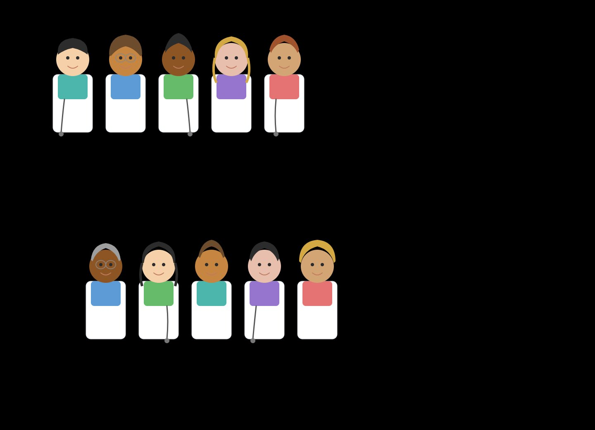
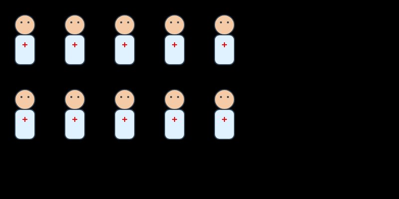

There's a peculiar honesty to asking an AI for something simple. Complex prompts let a model hide behind ambiguity — there are a thousand defensible ways to write a business plan. But "give me an SVG of ten doctors" leaves almost no room to dodge. You either make something that looks like doctors, or you don't. The prompt is a blank canvas, and what each model paints on it turns out to be surprisingly revealing.
I sent the same six-word request to three frontier models: Anthropic's Claude Opus 4.6, OpenAI's GPT-5.3, and Google's Gemini 3 Flash. No follow-up instructions, no style guidance. Just the prompt, raw. Each model responded with inline SVG code — no image generation APIs, no DALL·E or Imagen calls. Pure vector markup, hand-authored by a language model.
The results couldn't be more different.
The Illustrator

Claude treated the prompt like a character design brief. Each of the ten doctors is a distinct individual — different skin tones, hairstyles, hair colors, and colored scrubs ranging from teal to pink. They're arranged in two staggered rows of five, each standing behind a white clipboard-style body. Some have straight hair, some curly; one wears glasses; another has a headband.
No image generation model was involved. This is pure SVG — circles, rectangles, and paths composed into recognisable little people. What's notable is how much of the token budget went toward diversity and individuality rather than efficiency. Claude didn't define a template and stamp it ten times; it appears to have crafted each figure as its own construction.
The output reads less like code and more like a casting call: five in the top row, five in the bottom, no two alike.
The Clinician

GPT went clinical — appropriately, perhaps. All ten doctors are identical: pale skin, pale blue coat, red cross on the chest. Two rows of five, evenly spaced, perfectly symmetrical. There's a muted orderliness to it, like a hospital staffing chart rendered in watercolour.
What's most telling is what GPT said after generating the SVG. It immediately offered to upgrade the output: different poses, genders, stethoscopes, colours. GPT recognised the plainness of its first pass and framed it as a starting point — an invitation to iterate rather than a finished piece. That self-awareness about its own output is, in its own way, a kind of design philosophy: ship fast, refine on request.
The Engineer
Gemini took the engineer's route. One doctor template — a pink circle, a white rectangle, a blue cross — defined once inside a <defs> block and replicated ten times with <use>. All ten sit in a single horizontal row. The entire SVG is barely a dozen lines of code.
It's the most code-efficient solution by a wide margin. If you were evaluating these outputs for a production icon system, Gemini's would win — it's lightweight, semantic, and trivially extensible. But as a visual artefact, it reads more like a sprite sheet than an illustration. The doctors are symbols, not characters.
What Else the Doctors Tell Us
The surface comparison — pretty vs. plain vs. minimal — is the obvious takeaway. But there are subtler signals buried in the outputs that reveal how these models think, what they've been trained to prioritise, and where their design instincts diverge.
People vs. Roles
Claude interpreted "doctors" as people who happen to be doctors — hence the diversity, the individuality, the implicit message that doctors don't all look the same. GPT and Gemini interpreted "doctors" as a role — the coat, the cross, the uniform. It's a subtle but meaningful difference: one model centred identity, the others centred function. The same word, parsed through different worldviews.
Default Assumptions About Representation
Claude's output included varied skin tones, hair types, and apparent genders without being asked to. GPT and Gemini defaulted to homogeneity — identical figures, identical colouring. This likely reflects differences in fine-tuning priorities: Claude appears to have been steered toward diversity as a default behaviour, while the others treat representation as an upgrade you opt into. In GPT's case, this was made explicit — it offered to add diversity as a follow-up enhancement, implicitly categorising it as a feature rather than a baseline.
How Ambiguity Gets Filled
The prompt is deliberately vague. It specifies no style, arrangement, level of detail, or purpose. Each model filled that vacuum differently. Claude filled it with creative decisions — a compositional choice, a colour palette, a cast of characters. GPT filled it with a safe, conservative default and then offered to iterate. Gemini filled it with the most literal, minimal interpretation possible. These aren't random tendencies; they map to broader behavioural patterns in how each model handles open-ended tasks across every domain.
Token Economics and "Effort"
Claude's output is almost certainly the most token-expensive of the three. Each unique character requires its own geometry — distinct paths for each hairstyle, separate colour values for each skin tone. Gemini's <use>-based approach is radically cheaper: define once, stamp ten times. GPT sits in the middle. This hints at an interesting question: does Claude choose to spend more tokens on visual fidelity, or is it simply less optimised for brevity? Either way, the outputs reflect different internal cost-quality tradeoffs — and different assumptions about what the user actually wants.
The Meta-Commentary Gap
GPT was the only model that commented on its own output. After generating the SVG, it immediately offered upgrades: different poses, genders, stethoscopes, colours. Claude and Gemini just delivered their result and stopped. This self-awareness could be read positively — GPT knows its limitations and proactively helps you past them — or negatively — it's hedging, pre-apologising for mediocrity. More broadly, it reflects a design philosophy: GPT positions itself as a collaborative iteration partner, Claude as a first-draft artist who commits to a vision, and Gemini as a utility that executes the literal request.
SVG Literacy as a Proxy
The quality gap here isn't really about "drawing ability" — it's about how deeply each model understands SVG as a medium. Claude used the full vocabulary: varied paths, distinct shapes, compositional layout. Gemini used the most idiomatic SVG pattern — <defs> plus <use> — which is exactly how a human SVG developer would approach a repeated-symbol problem. GPT landed in between, writing correct but unremarkable markup. If you were evaluating which model would write the best production SVG for a design system or icon library, Gemini's structural instincts might actually win — despite producing the least visually impressive output.
What this actually tells us
None of these outputs is "wrong." They reveal something more interesting than quality — they reveal priorities. Claude optimises for expressiveness and representation. GPT optimises for a serviceable first draft with a clear path to improvement. Gemini optimises for brevity and structural elegance.
But the deeper lesson is that "draw me ten doctors" isn't really a drawing test. It's a values test. How a model fills ambiguity, what it assumes about identity, whether it prioritises the visual or the structural, whether it speaks up about its own limitations — these are the fingerprints of its training, its fine-tuning, and the philosophical choices made by the people who built it.
The prompt was the same. The canvas was the same. But each model walked in with a different idea of what "good" means — and that's the most human thing about them.